Reduce the complexity or breadth of discussion; may remove information
http://localhost:5002/check_task?source=ap&doc_id=12111&v_x=0&v_y=1
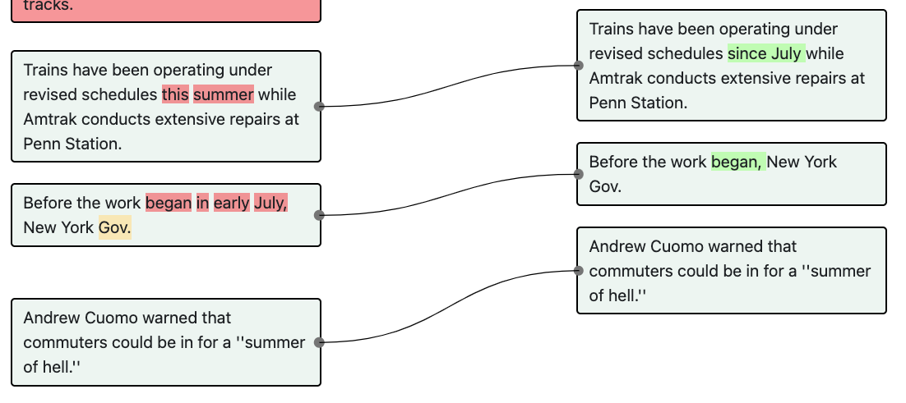
```Before the work began in early July, New York Gov. ||| Before the work began, New York Gov.```
“In early July” is removed because July has been mentioned in the previous sentence. Hence, it is being simplified for clarification. This is not <i>Emphasizing a fact</i> because no text is added. Neither is it a <i>Tonal Edit</i> because the edit only involves deletion of texts instead of different word choices.
The author provides a definition of a term that was not defined in the previous version.
The journalist expands the sentence to highlight a fact but does not introduce additional background or analytical information.
http://localhost:5002/check_task?source=bbc&doc_id=557714&v_x=0&v_y=1
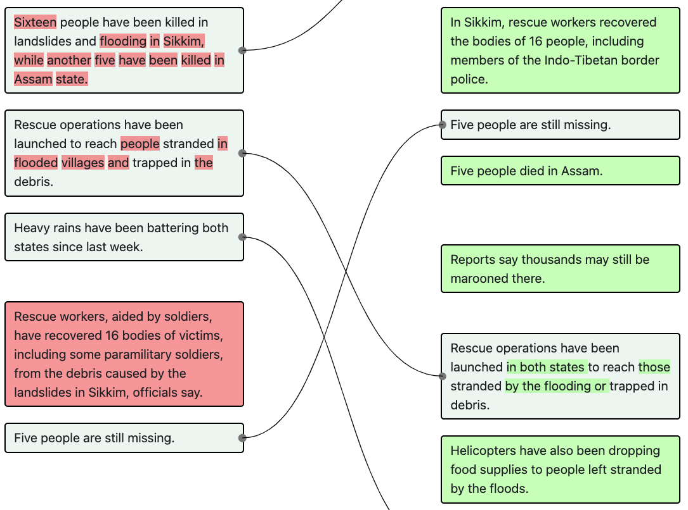
```Rescue operations have been launched to reach people stranded in flooded villages and trapped in the debris. ||| Rescue operations have been launched in both states to reach those stranded by the flooding or trapped in debris.```
This edit is <i>Emphasizing a fact</i> because it attempts to clarify the launching location (i.e. “in both states”). It is not a <i>Background Elaboration</i> because “in both states” is not new information, but information that is ignored or assumed to be known in the first version. It also involves <i>Tonal Edit</i> because the latter part of the sentence has been refactored. It is not a <i>Style-guided Edit</i> because the refactoring is not fixing violations of style guides.
The journalist rewrote the sentence because the original version is inappropriate/ may be considered insensitive.
http://localhost:5002/check_task?source=independent&doc_id=976785&v_x=0&v_y=1
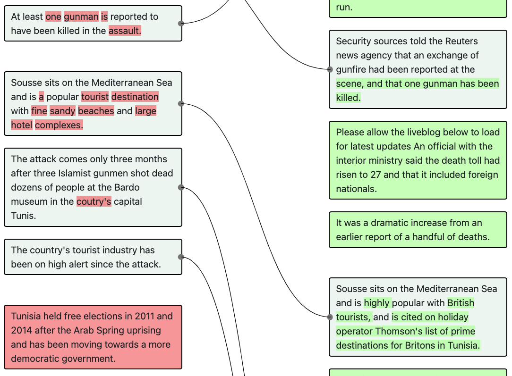
```Sousse sits on the Mediterranean Sea and is a popular tourist destination with fine sandy beaches and large hotel complexes. ||| Sousse sits on the Mediterranean Sea and is highly popular with British tourists, and is cited on holiday operator Thomson's list of prime destinations for Britons in Tunisia.```
The article is about an attack that leads to deaths in Sousse but the first version describes how good the beaches are, which is inappropriate.
Edits where the first version violates a style guide and the revised version fixes it.
http://localhost:5002/check_task?source=nyt&doc_id=1870033&v_x=0&v_y=1
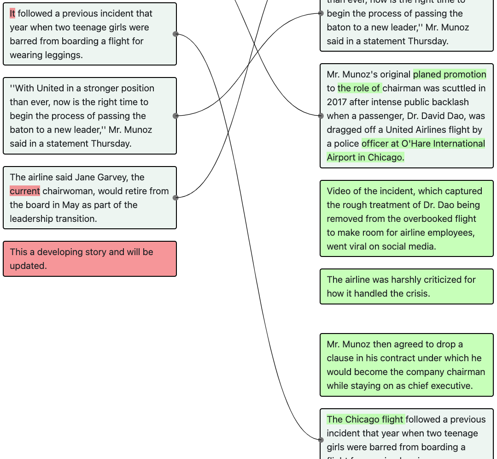
```It followed a previous incident that year when two teenage girls were barred from boarding a flight for wearing leggings. ||| The Chicago flight followed a previous incident that year when two teenage girls were barred from boarding a flight for wearing leggings.```
In the first version, the journalist uses “It” to refer to “The Chicago flight”, which was not mentioned prior in the article, which violates the style guide. This edit is not a <i>Tonal Edits</i> because the edit does fix a style guide violation and not because of preferences of word choices.
The journalist made the edits because of word choice preferences.
http://localhost:5002/check_task?source=nyt&doc_id=1870033&v_x=0&v_y=1
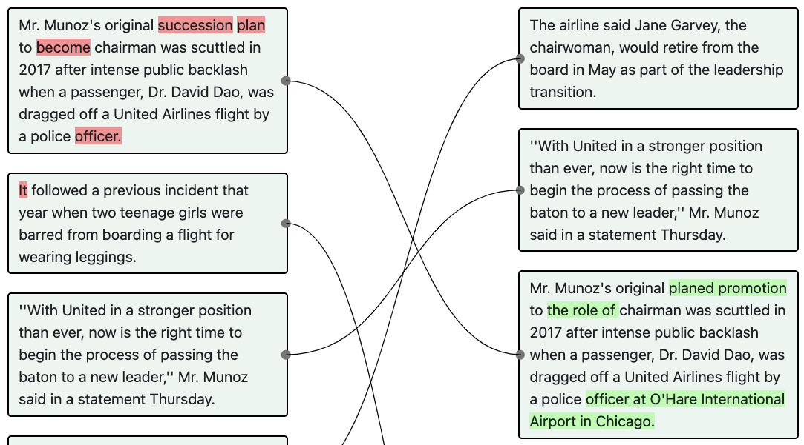
```Mr. Munoz's original succession plan to become chairman was scuttled in 2017 after intense public backlash when a passenger, Dr. David Dao, was dragged off a United Airlines flight by a police officer. ||| Mr. Munoz's original planed promotion to the role of chairman was scuttled in 2017 after intense public backlash when a passenger, Dr. David Dao, was dragged off a United Airlines flight by a police officer at O'Hare International Airport in Chicago.```
Here the use of “succession plan” and “become” does not violate any style guidelines or grammar. Hence, this edit is not a <i>Style-guided Edit</i> or <i>Syntax Correction</i>, but a <i>Tonal Edit</i>. The edit also involves <i>Emphasizing a fact</i> as the journalist attempts to clarify where the officer is from at the end of the sentence.
Improve grammar, spelling, or punctuation.
http://localhost:5002/check_task?source=bbc&doc_id=372407&v_x=2&v_y=3
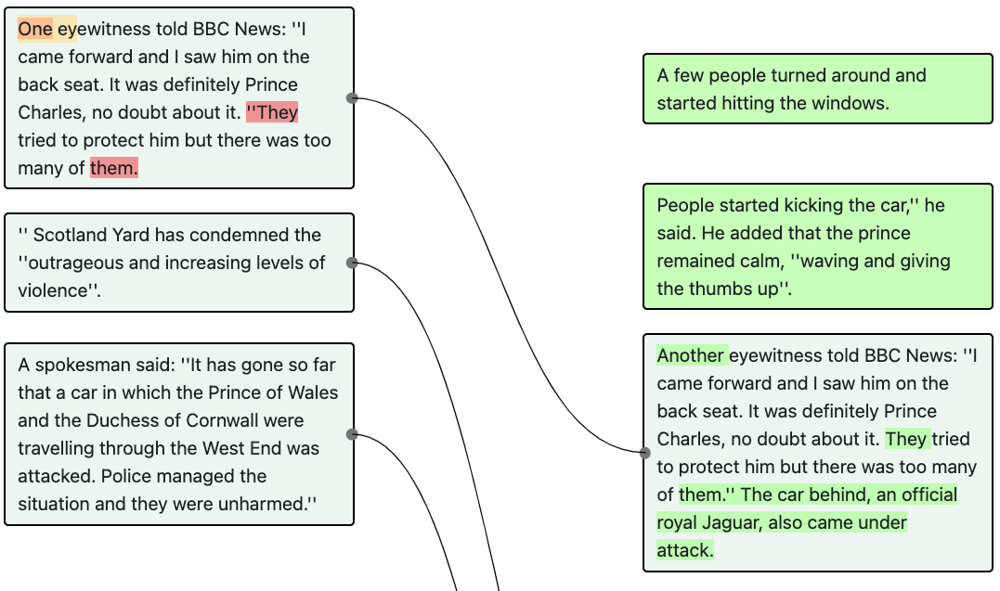
```One eyewitness told BBC News: ''I came forward and I saw him on the back seat. It was definitely Prince Charles, no doubt about it. ''They tried to protect him but there was too many of them. ||| Another eyewitness told BBC News: “I came forward and I saw him on the back seat. It was definitely Prince Charles, no doubt about it. They tried to protect him but there was too many of them.” The car behind, an official royal Jaguar, also came under attack.```
This is a <i>Syntax Correction</i> because in the first version, “They tried to protect him but there were too many of them.” is mistakenly being included as part of the quote, which is fixed in the second version. This is not a <i>Tonal Edit</i> or a <i>Style-guided Edit</i> because the rest of the sentence is not refactored and the edit does not attempt to fix a violation of style guidelines.
Add additional information to the article that is not analytical.
http://localhost:5002/check_task?source=independent&doc_id=976785&v_x=0&v_y=1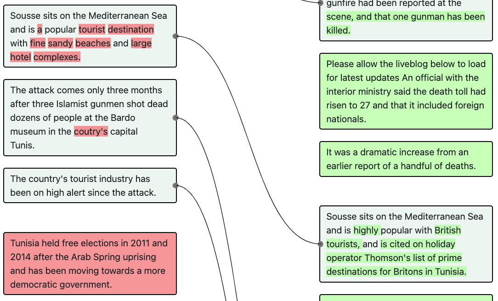
```“Sousse sits on the Mediterranean Sea and is a popular tourist destination with fine sandy beaches and large hotel complexes.” ||| “Sousse sits on the Mediterranean Sea and is highly popular with British tourists, and is cited on holiday operator Thomson's list of prime destinations for Britons in Tunisia.”```
In this example, the author provides additional information about Sousse. Hence, the edit is an Elaboration - Background. It is not an Elaboration - Analysis because the new information introduced is not analysis derived from/ inferred by the journalist.
http://localhost:5002/check_task?source=nyt&doc_id=1870033&v_x=0&v_y=1
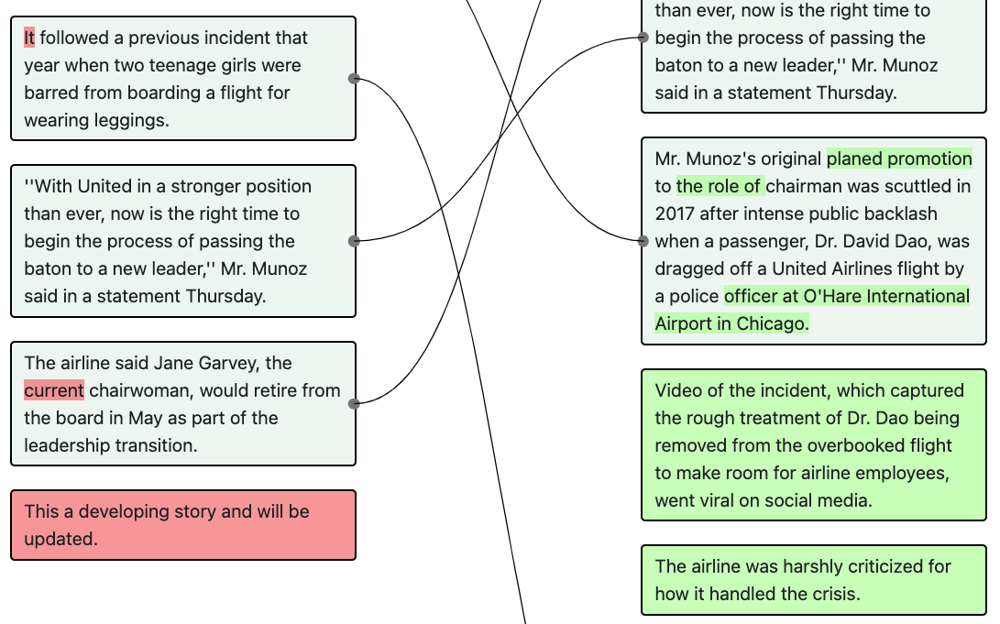
```|||Video of the incident, which captured the rough treatment of Dr. Dao being removed from the overbooked flight to make room for airline employees, went viral on social media. “The airline was harshly criticized for how it handled the crisis.”```
The article is breaking news. These new edits provide more additional information about the event. Hence, the edit is an <i>Elaboration - Background</i>. It is not an <i>Elaboration - Analysis</i> because the new information introduced is not analysis derived from/ inferred by the journalist.
The writer derives meaningful inferences from the presented information.
http://localhost:5002/check_task?source=ap&doc_id=459&v_x=6&v_y=7
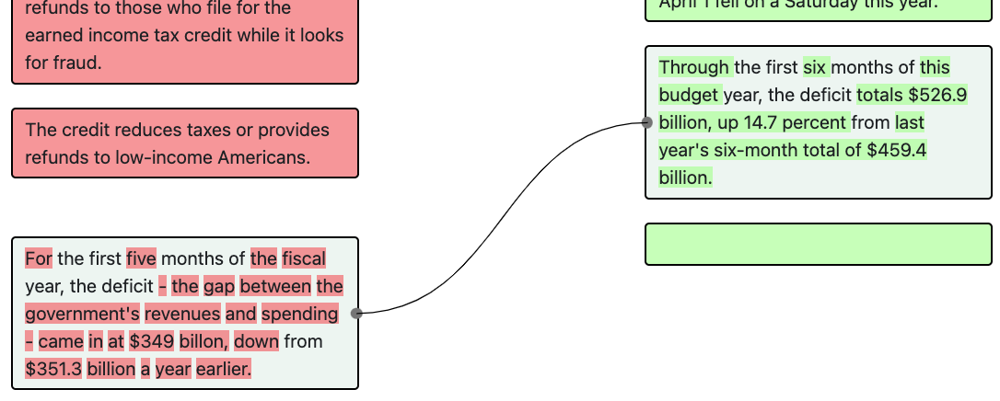
```For the first five months of the fiscal year, the deficit - the gap between the government's revenues and spending - came in at $349 billon, down from $351.3 billion a year earlier. ||| Through the first six months of this budget year, the deficit totals $526.9 billion, up 14.7 percent from last year's six-month total of $459.4 billion.```
This edit is an <i>Elaboration - Analysis</i> because “up 14.7 percent” is the analysis made by the journalist. This is also an <i>Elaboration - Background</i> because the new version includes additional information about the deficit through the first six months which is not mentioned in the previous version. Additionally, this edit involves <i>Fact Update - Deletion with addition</i> as we see that the deficit for the first five months is removed from the first version because the new version talks about deficit for the first six months.
There is a change in world state and the edit involves an update to an event. Usually, there are changes to verbs.
http://localhost:5002/check_task?source=nyt&doc_id=1274421&v_x=0&v_y=1
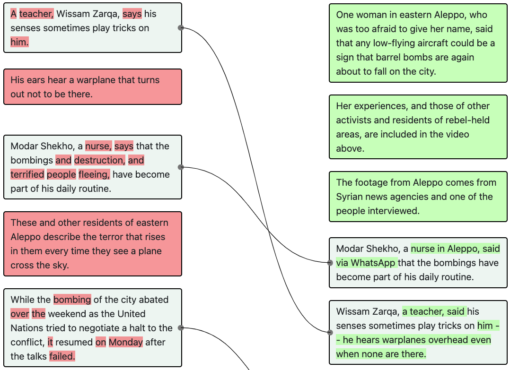
```A teacher, Wissam Zarqa, says his senses sometimes play tricks on him. ||| Wissam Zarqa, a teacher, said his senses sometimes play tricks on him -- he hears warplanes overhead even when none are there.```
This edit is an <i>Event Update</i> because we see that the tense is changed from present tense to past tense (says -> said). In addition, it also involves <i>Copy Editing - Tonal Edits</i> (because the sentence is refactored) and <i>Elaboration - Background</i> (because additional non-analytical information about how Wissam’s senses play tricks on him is elaborated).
http://localhost:5002/check_task?source=bbc&doc_id=557714&v_x=0&v_y=1
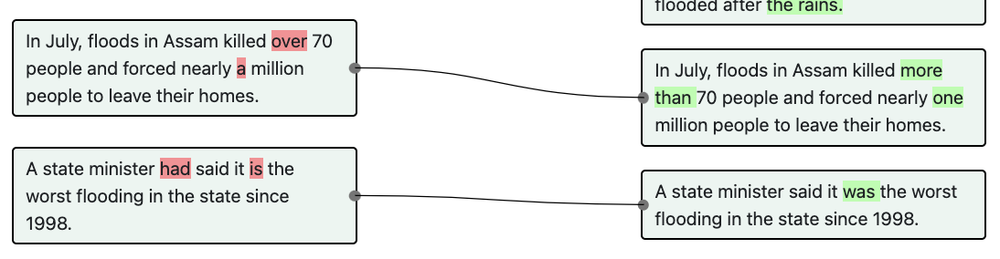
```A state minister had said it is the worst flooding in the state since 1998. ||| A state minister said it was the worst flooding in the state since 1998.```
There is a change in the sentence’s tense (from past perfect tense to past tense). It does not involve <i>Copy Editing - Tonal Edits</i> because the sentence structure is largely the same. It also does not involve any <i>Elaboration</i> intention because no additional information is introduced.
There is an addition of quotes in the article.
http://localhost:5002/check_task?source=bbc&doc_id=372407&v_x=2&v_y=3
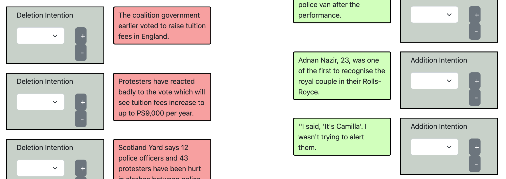
```||| ''I said, 'It's Camilla'. I wasn't trying to alert them.```
This edit is a <i>Quote Update</i> because a quote is added. This is also an <i>Elaboration - Background</i> because the quote itself can be viewed as new information introduced and the information is not analytical.
http://localhost:5002/check_task?source=bbc&doc_id=372407&v_x=2&v_y=3
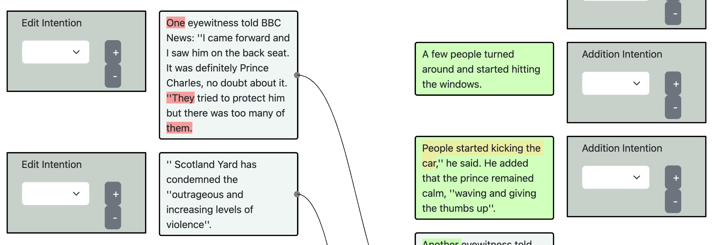
```||| People started kicking the car,'' he said. He added that the prince remained calm, ''waving and giving the thumbs up''.```
This edit is a <i>Quote Update</i> because a quote is added. This is also an <i>Elaboration - Background</i> because the quote itself can be viewed as new information introduced and the information is not analytical.
Any addition of information that does not fall into the category of quote update or event update.
http://localhost:5002/check_task?source=ap&doc_id=1129&v_x=3&v_y=4
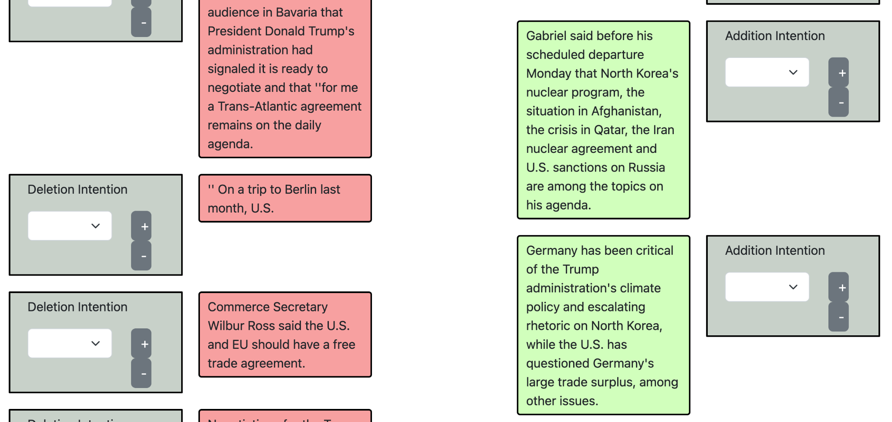
```||| Germany has been critical of the Trump administration's climate policy and escalating rhetoric on North Korea, while the U.S. has questioned Germany's large trade surplus, among other issues.```
This edit is a <i>Document Update</i> because no quote or event is added or updated. This is also an <i>Elaboration - Background</i> because the quote itself can be viewed as new information introduced and the information is not analytical.
http://localhost:5002/check_task?source=ap&doc_id=767&v_x=1&v_y=2
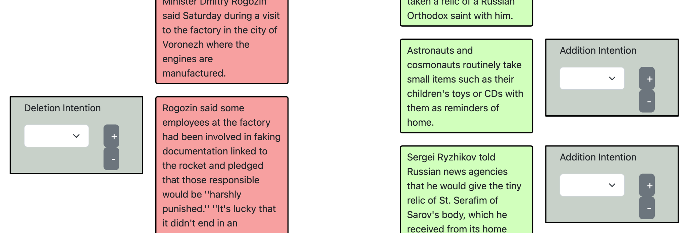
```||| Astronauts and cosmonauts routinely take small items such as their children's toys or CDs with them as reminders of home.```
This edit is a <i>Document Update</i> because no quote or event is added or updated. This is also an <i>Elaboration - Background</i> because the quote itself can be viewed as new information introduced and the information is not analytical.
There are factual errors in the original version. The new version corrects the error.
http://localhost:5002/check_task?source=bbc&doc_id=842813&v_x=2&v_y=3
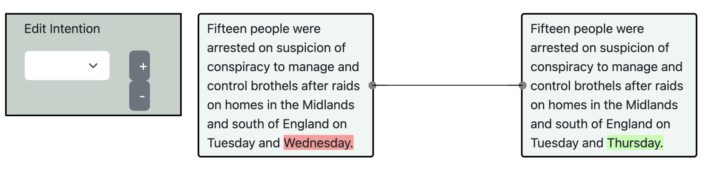
```Fifteen people were arrested on suspicion of conspiracy to manage and control brothels after raids on homes in the Midlands and south of England on Tuesday and Wednesday. ||| Fifteen people were arrested on suspicion of conspiracy to manage and control brothels after raids on homes in the Midlands and south of England on Tuesday and Thursday.```
The original version states “Tuesday and Wednesday”, which is corrected to “Tuesday and Thursday” in the next version. This is not a Fact Update because the information is inaccurate in the first version.
http://localhost:5002/check_task?source=bbc&doc_id=1095119&v_x=2&v_y=3
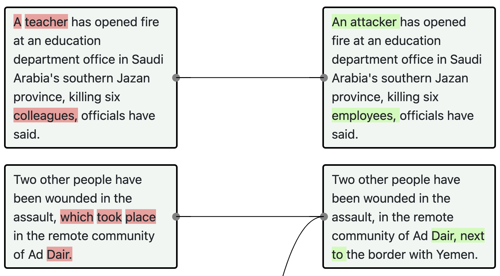
```A teacher has opened fire at an education department office in Saudi Arabia's southern Jazan province, killing six colleagues, officials have said.```
In the updated version, we see that we are not 100% sure the suspect is a teacher. Hence a <i>Verification - Correction</i> edit.
The new version includes new sources for additional information. Sometimes, new sources are added for confirmation purposes.
The deletion is to make room for `addition` operations. The `addition` operations involves an update to a quote/event/document or elaboration.
http://localhost:5002/check_task?source=ap&doc_id=9984&v_x=0&v_y=1
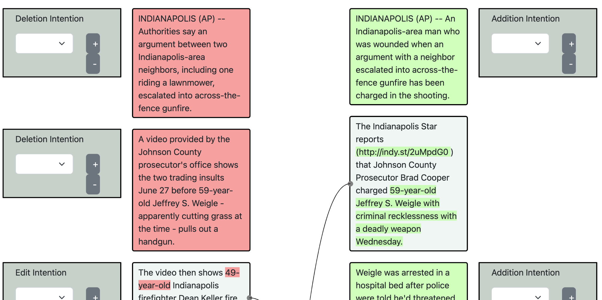
```INDIANAPOLIS (AP) -- Authorities say an argument between two Indianapolis-area neighbors, including one riding a lawnmower, escalated into across-the-fence gunfire. |||```
This sentence is deleted because the writer now has more information about the event (e.g. Weigle is charged)
The deletion is not to make room for an addition.
http://localhost:5002/check_task?source=independent&doc_id=1502097&v_x=1&v_y=2
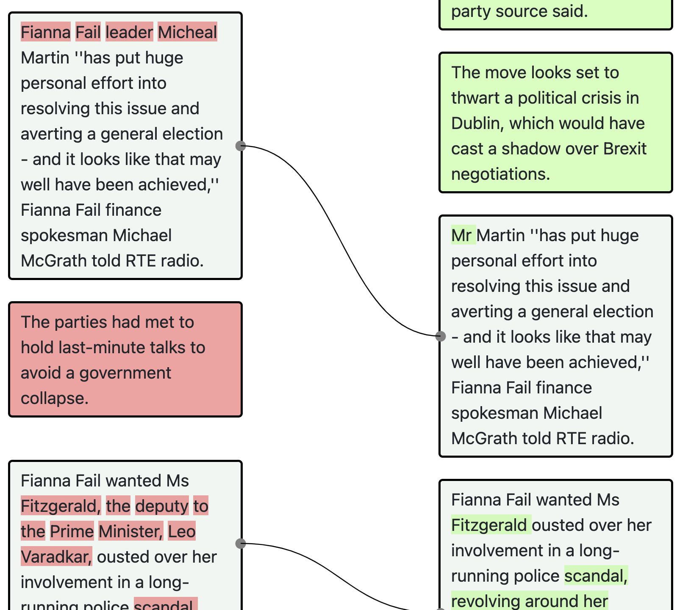
```The parties had met to hold last-minute talks to avoid a government collapse. |||```
The sentence is deleted because it is no longer a main point of the news article.